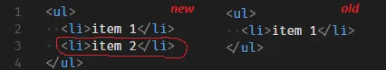
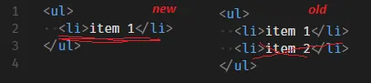
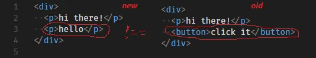
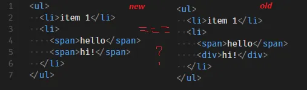

[Javascript]가상 DOM 구현 해보기(w. Babel, Diffing Algorithm)
CS 스터디에서 11월 14일 발표한 가상 DOM 구현 해보기에 대해 정리한 문서를 블로그에 공유하고자 한다.
이 문서는 Medium의 @deathmood의 글들을 번역하는 수준으로 참고했으며, 해당 문서의 내용처럼 나이브한 수준으로 VDOM을 구현하는 방법에 대해 설명한다.
참고 문서
- How to write your own Virtual DOM | by deathmood | Medium
- Write your Virtual DOM 2: Props & Events | by deathmood | Medium
DOM 트리 Node를 객체로 표현하기
- DOM을 이루는 HTML Element는 다음과 같은 구조의 객체로 표현할 수 있음
{
type: '...',
props: { '...': '...', ...},
children: [{...}, ...]
}
// 예시
// <ul class="list">
// <li> item </li>
// </ul> 은 다음과 같이 표현 가능함
{
type: 'ul',
props: { 'class': 'list' },
children: [{
type: 'li',
props: {},
children: ['item']
}]
}
- 그리고 이러한 구조의 JS 객체를 생성하기 위해, 다음과 같은 헬퍼 함수를 사용
function createNode(type, props, ...children) {
return {type, props, children};
}
- 이를 통해, DOM 트리를 다음과 같은 형태로 작성할 수 있음
createNode('ul', {'class': 'list'},
createNode('li', {}, 'item'),
);
- 위와 같은 형태는, 실제로 JSX 문법을 트랜스파일 해주는
Babel의 방식(v7 이전)과도 유사함
// 변환 전 JSX
const profile = (
<div>
<img src="avatar.png" className="profile" />
<h3>{[user.firstName, user.lastName].join(" ")}</h3>
</div>
);
// 변환 후
const profile = React.createElement(
"div",
null,
React.createElement("img", { src: "avatar.png", className: "profile" }),
React.createElement("h3", null, [user.firstName, user.lastName].join(" "))
);
- 실제로,
/** @jsx createNode */라는 주석을 통해,Babel에게 우리가 작성한 함수(node)를 사용하게 할 수도 있음
/** @jsx createNode */
const a = (
<ul className="list">
<li>item 1</li>
<li>item 2</li>
</ul>
);
// 위 코드를, babel이 아래와 같이 트랜스파일해줌
const a = (
createNode('ul', { className: 'list' },
createNode('li', {}, 'item 1'),
createNode('li', {}, 'item 2'),
);
);
- 다만, Babel과 함께 사용할 경우,
createNode함수에 약간의 수정이 필요
// prop이 없는 <div></div> 와 같은 형태인 경우, Babel은 props를 null로 세팅해버림
// 따라서 이를 방지하고자, `props || {}`를 대입하도록 수정해, 추후 props를 iterate할 때 생기는 에러를 방지
function createNode(type, props, …children) {
return { type, props: props || {}, children };
}
가상 DOM 표현을 실제 DOM에 적용하기
- 위에서 작성한 표현들을 실제 DOM에 반영하기 위해,
몇 가지 가정을 수립- 실제 DOM Node를 가리키는 변수는
$로 시작함. 예를 들어$parent와 같은 이름의 변수는 실제 DOM 엘리먼트 일것. - 가상 DOM 표현은
node라는 이름의 변수로 존재 - React에서처럼, 오직 하나의 루트 노드만 존재할 수 있음
- 실제 DOM Node를 가리키는 변수는
- 위 가정을 바탕으로, 다음과 같은 가상 DOM 노드 -> 실제 DOM 노드 변환 함수를 작성할 수 있음
function createElement(node) {
if (typeof node === 'string') {
// node 객체가 문자만 존재하는 경우, `Text` 노드를 생성
return document.createTextNode(node);
}
// 이외의 경우, node 객체의 type 명을 바탕으로 DOM 노드 객체를 생성
return document.createElement(node.type);
}
- 위 함수에서 자식들(
children)을 고려하면, 이전에 작성한createNode함수처럼 재귀 형태로 구현할 수 있음- 다시 말해, 자식들 배열에 대해
createElement함수를 호출하는 형태로 작성할 수 있음
- 다시 말해, 자식들 배열에 대해
function createElement(node) {
if (typeof node === 'string') {
return document.createTextNode(node);
}
const $el = document.createElement(node.type);
// node 객체의 children 배열에 포함된 자식 node 객체들에게 createElement 함수를 적용 한 뒤,
// 각 결과물들을 부모($el)의 자식으로 추가
node.children
.map(createElement)
.forEach($el.appendChild.bind($el));
return $el;
}
- 이때,
props도 반영하기 위해 별도의 함수인setProp과setProps를 선언- 이때, 다음 3가지 케이스를 고려해야 함
- VDOM에서 사용되는
className프로퍼티를 HTML 엘리먼트의class어트리뷰트로 변환할 것className은 JS에서class가 예약어이기 때문에, 이를 대신해 사용되는 키워드
부울 DOM 어트리뷰트제대로 설정하기- 실제
부울 DOM 어트리뷰트는값이 *존재*만 해도 설정이 됨 - 즉,
checked={false}와 같이 설정해도,false라는 값이 존재하므로 해당 옵션이설정이 된 것으로 동작함 - 따라서, 어트리뷰트뿐만 아니라 프로퍼티도 설정하도록 해야 함
- 실제
사용자 지정 prop설정하기- 만약 사용자가 VDOM 상에서만 처리하는 prop을 사용하는 경우, 이는 실제 DOM에서는 표시되지 말아야 함
- VDOM에서 사용되는
- 이때, 다음 3가지 케이스를 고려해야 함
function setBooleanProp($target, name, value) {
// 부울 DOM 어트리뷰트를 설정하는 함수
if (value) {
// 값이 true인 경우
// 해당 어트리뷰트 값을 true로 설정하고
$target.setAttribute(name, value);
// 해당 프로퍼티를 true로 설정
$target[name] = true;
} else {
// 값이 false인 경우
// 해당 프로퍼티를 false로 설정
$target[name] = false;
}
}
function isCustomProp(name) {
// name이 사용자 지정 prop 이름인지 T/F로 반환
return false;
}
function setProp($target, name, value) {
// 실제 DOM 엘리먼트인 $target에 어트리뷰트를 적용
if (isCustomProp(name)) {
// 사용자 지정 prop인 경우, 실제 DOM에 반영 X
return;
} else if (name === 'className') {
// className 프로퍼티는 실제 DOM 엘리먼트의 class 어트리뷰트에 해당됨
$target.setAttribute('class', value);
} else if (typeof value === 'boolean') {
// 부울 DOM 어트리뷰트는 별도의 함수로 처리
setBooleanProp($target, name, value);
} else {
// 이외의 경우는 Element의 setAttribute 함스를 통해 어트리뷰트 설정
$target.setAttribute(name, value);
}
}
function setProps($target, props) {
// 주어진 props들을 순회하며, 실제 DOM 엘리먼트인 $target에 이들을 적용
Object.keys(props).forEach(name => {
setProp($target, name, props[name]);
});
}
- 이후, 이를 createElement에도 적용
function createElement(node) {
if (typeof node === 'string') {
return document.createTextNode(node);
}
const $el = document.createElement(node.type);
setProps($el, node.props);
node.children
.map(createElement)
.forEach($el.appendChild.bind($el));
return $el;
}
가상 DOM 트리 비교하기(디핑 알고리즘)
- 가상 DOM을 구현하기 위해, 이전 트리와 새 트리의 차이를 비교하는
디핑 알고리즘을 구현해야 함 - 이때, 디핑 알고리즘에서 처리해야 할 케이스는 대략 다음과 같음
- 이전 트리에 없던 노드가 새롭게 생겨난 경우
appendChild(...)를 통해 추가해주어야 함
- 이전 트리에 있던 노드가 없어진 경우
removeChild(...)를 통해 삭제해주어야 함
- 이전 트리에 있던 노드가 다른 타입의 노드로 변경된 경우
replaceChild(...)를 통해 해당 노드를 대체해야 함
- 노드가 동일한 경우
- 자식들에 대해 디핑 알고리즘을 진행
- 이전 트리에 없던 노드가 새롭게 생겨난 경우
- 위 케이스들을 처리하기 위해,
$parent,oldNode,newNode세 가지 인자를 받는updateElement()함수를 구현해야 함 - 또한, 각 노드의
props를 비교하고 업데이트하는updateProps역시 구현해야 함
updateProps(…) 구현하기
- 앞서,
prop값을 세팅하는 함수인setProp은 구현해두었으니,prop값을 지우는 함수인removeProp을 구현해야 함
function removeBooleanProp($target, name) {
// 부울 DOM 어트리뷰트의 경우,
// 어트리뷰트를 삭제하고 프로퍼티를 false로 설정한다
$target.removeAttribute(name);
$target[name] = false;
}
function removeProp($target, name, value) {
if (isCustomProp(name)) {
// 커스텀 Prop은 DOM에 반영되어있지 않을 것이므로 아무런 동작도 수행하지 않아야 함
return;
} else if (name === 'className') {
$target.removeAttribute('class');
} else if (typeof value === 'boolean') {
removeBooleanProp($target, name);
} else {
$target.removeAttribute(name);
}
}
- 그리고 이들을 바탕으로 이전 값과 최신 값을 비교해
prop을 업데이트하는updateProp함수를 구현함
function updateProp($target, name, newVal, oldVal) {
if (!newVal) {
// newNode에 oldNode에 있던 prop이 없는 경우
// DOM 엘리먼트에서 해당 prop을 삭제함
removeProp($target, name, oldVal);
} else if (!oldVal || newVal !== oldVal) {
// oldNode에 없던 prop이 newNode에 있거나,
// newNode의 prop 값이 oldNode의 prop 값과 다른 경우
// DOM 엘리먼트에 newNode의 prop 값을 세팅함
setProp($target, name, newVal);
}
}
function updateProps($target, newProps, oldProps = {}) {
// oldNode의 props와 newNode의 props를 모두 props라는 한 객체에 합침
// 이렇게 하면 `props` 객체는 이전 노드에 있던 props와 현재 노드에 있는 props에 존재하는 모든 key를 가지게 됨
// 즉, 이전에 존재한 prop 또는 새롭게 생겨난 prop 모두 처리할 수 있음
const props = Object.assign({}, newProps, oldProps);
// 그리고 `props`의 key들을 순회하며, updateProp 함수 호출
Object.keys(props).forEach(name => {
updateProp($target, name, newProps[name], oldProps[name]);
});
}
이벤트 핸들러?
- 주로 React와 같은 라이브러리에서 특정 이벤트에 대한 핸들러는
onXXX라는 이름의 prop으로 주어짐 - 이들 역시
updateProp처럼 전 후를 비교하여 처리하고 싶지만, 함수간 비교는 사실상 불가능toString()으로 문자열로 변환한대도, 내부에 네이티브 코드가 있는 경우 비교 불가능
- 이를 해결할 수 있는 방안은 두 가지가 있음
- 루트 엘리먼트에서 트리 내부에서 발생하는 모든 이벤트를 처리하는 이벤트 관리자를 둔다
- 엘리먼트 생성 시 한 번만
addEventListener를 호출한다- 대부분의 경우 이벤트 핸들러 내용이 바뀌지 않기 때문
- 여기서는 두 번째 방안을 사용
function isEventProp(name) {
// prop key가 on으로 시작하는지 검사하는 함수
return /^on/.test(name);
}
function extractEventName(name) {
// onXXX에서 XXX를 추출하는 함수
return name.slice(2).toLowerCase();
}
function addEventListeners($target, props) {
// props의 각 key를 순회하며, onXXX라는 이름을 갖는 prop에 대해 addEventListener 호출
Object.keys(props).forEach(name => {
if (isEventProp(name)) {
$target.addEventListener(
extractEventName(name),
props[name]
);
}
});
}
updateElement(…) 구현하기
이전에 없던 노드가 생겨난 경우

- 새롭게 생겨난 노드를 추가해야 하는 경우, 다음과 같이 구현 가능
if (!oldNode) {
$parent.appendChild(
createElement(newNode)
);
}
이전에 있던 노드가 없어진 경우

- 이전 VDOM 트리에 존재하던 노드가 없어진 경우, 실제 DOM에서 노드를 제거해야 함
- 이를 위해서는, 인자로 주어진
$parent를 활용해$parent.removeChild(실제DOM참조)를 호출해야 함- 이때, 인자로 넘겨줄 삭제될 노드에 대한
실제 DOM 참조를 구해야 함
- 이때, 인자로 넘겨줄 삭제될 노드에 대한
- 이를 위해 부모 노드(
$parent)에서 해당 노드가 몇 번째 index를 갖는지를 추가 인자로 받아야 함 - 따라서 함수의 형태는 다음과 같이 변경됨
function updateElement($parent, newNode, oldNode, index = 0) {
if (!oldNode) {
// 1. 이전에 없던 노드가 생겨난 경우
$parent.appendChild(
createElement(newNode)
);
} else if (!newNode) {
// 2. 이전에 있던 노드가 없어진 경우
$parent.removeChild(
$parent.childNodes[index]
);
}
}
이전 트리에 있던 노드가 다른 타입의 노드로 변경된 경우

- 변경된 노드를 반영하기 위해서는, 먼저 두 Node 객체를 비교하고 다른지 여부를 알려주는 함수를 작성해야 함
function isNodeChanged(node1, node2) {
// 1. 두 Node의 유형을 비교한다.
// 2. 첫 Node가 문자열인 경우, 두 번째 Node의 값과 동일한지 비교한다.
// 3. 두 노드의 type 프로퍼티를 비교한다.
return typeof node1 !== typeof node2 ||
typeof node1 === 'string' && node1 !== node2 ||
node1.type !== node2.type;
}
- 그리고 이를 이용해 두 Node를 비교한 뒤, 다른 경우
$parent.replaceChild()를 통해 새 Node로 교체해야 함
else if (isNodeChanged(newNode, oldNode)) {
// createElement(newNode)로 $parent.childNodes[index]를 대체한다.
$parent.replaceChild(
createElement(newNode),
$parent.childNodes[index]
);
}
노드가 동일한 경우

- 이전 트리와 현재 트리에서 노드에 별다른 변경사항이 존재하지 않는 경우, 두 트리에서 자식들에 대해 비교를 수행해야 함
- 즉, 각
newNode.children[i]와oldNode.children[i]에 대해updateElement()를 재귀적으로 호출해야 함 - 이때, 다음과 같은 사항을 유의해야 함
- 노드가 HTML 엘리먼트인 경우(즉, Node 객체의 type이 존재하는 경우)에만 자식들을 비교해야 함
- 텍스트 노드는 자식을 가질 수 없기 때문
- 모든 자식들을 하나 하나 비교해야 함
- 노드가 HTML 엘리먼트인 경우(즉, Node 객체의 type이 존재하는 경우)에만 자식들을 비교해야 함
- 또한, 동일한 노드인 경우
Props들 역시 비교해주어야 하므로updateProps를 호출함 - 이를 코드로 작성하면, 다음과 같음
else if (newNode.type) {
updateProps($parent.childNodes[index], newNode.props, oldNode.props);
const newLength = newNode.children.length;
const oldLength = oldNode.children.length;
for (let i = 0; i < newLength || i < oldLength; i++) {
// 두 트리에서 각 노드(newNode, oldNode)의 자식은 모두 현재 노드($parent.childNodes[index])가 부모이므로
// updateElement 함수의 $parent 인자로 현재 노드($parent.childNodes[index])를 전달
// 또한, 두 노드 자식들의 길이가 다를 수 있으므로
// 이를 고려한 조건문(i < newLength || i < oldLength)을 사용
updateElement(
$parent.childNodes[index],
newNode.children[i],
oldNode.children[i],
i
);
}
결과물
- 위에서 작성한 코드들을 합치면 다음과 같이 됨
function createNode(type, props, ...children) {
return { type, props, children };
}
function createElement(node) {
if (typeof node === 'string') {
// node 객체가 문자만 존재하는 경우, `Text` 노드를 생성
return document.createTextNode(node);
}
// 이외의 경우, node 객체의 type 명을 바탕으로 DOM 노드 객체를 생성
const $el = document.createElement(node.type);
// node 객체의 children 배열에 포함된 자식 node 객체들에게 createElement 함수를 적용 한 뒤,
// 각 결과물들을 부모($el)의 자식으로 추가
node.children
.map(createElement)
.forEach($el.appendChild.bind($el));
return $el;
}
function isNodeChanged(node1, node2) {
// 1. 두 Node의 유형을 비교한다.
// 2. 첫 Node가 문자열인 경우, 두 번째 Node의 값과 동일한지 비교한다.
// 3. 두 노드의 type 프로퍼티를 비교한다.
return typeof node1 !== typeof node2 ||
typeof node1 === 'string' && node1 !== node2 ||
node1.type !== node2.type
}
function updateElement($parent, newNode, oldNode, index = 0) {
if (!oldNode) {
// 1. 이전에 없던 노드가 생겨난 경우
$parent.appendChild(
createElement(newNode)
);
} else if (!newNode) {
// 2. 이전에 있던 노드가 없어진 경우
$parent.removeChild(
$parent.childNodes[index]
);
} else if (isNodeChanged(newNode, oldNode)) {
// 3. 이전 트리에 있던 노드가 다른 타입의 노드로 변경된 경우
// createElement(newNode)로 $parent.childNodes[index]를 대체한다.
$parent.replaceChild(
createElement(newNode),
$parent.childNodes[index]
);
} else if (newNode.type) {
// 4. 이전 트리와 현재 트리에서 노드의 타입이 동일한 경우
const newLength = newNode.children.length;
const oldLength = oldNode.children.length;
for (let i = 0; i < newLength || i < oldLength; i++) {
// 두 트리에서 각 노드(newNode, oldNode)의 자식은 모두 현재 노드($parent.childNodes[index])가 부모이므로
// updateElement 함수의 $parent 인자로 현재 노드($parent.childNodes[index])를 전달
// 또한, 두 노드 자식들의 길이가 다를 수 있으므로
// 이를 고려한 조건문(i < newLength || i < oldLength)을 사용
updateElement(
$parent.childNodes[index],
newNode.children[i],
oldNode.children[i],
i
);
}
}
}
- 이는 다음 사이트에서 테스트해볼 수 있음